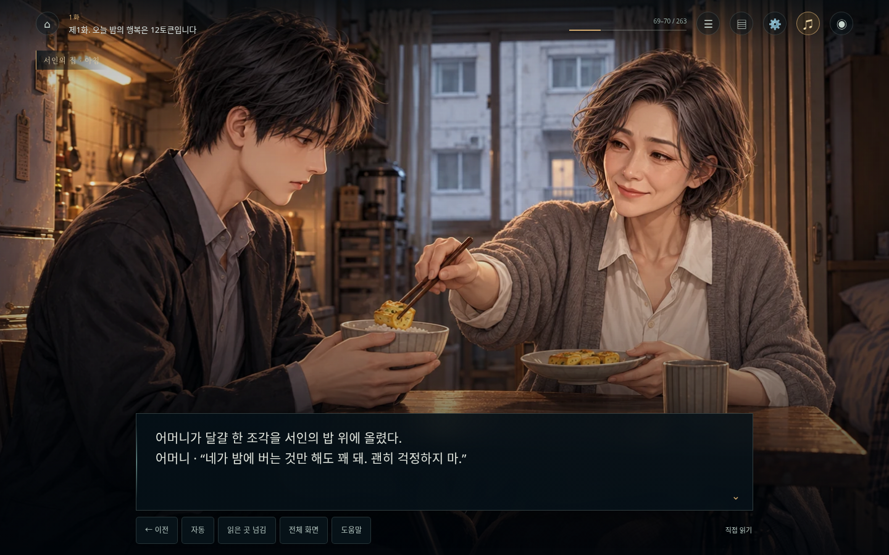
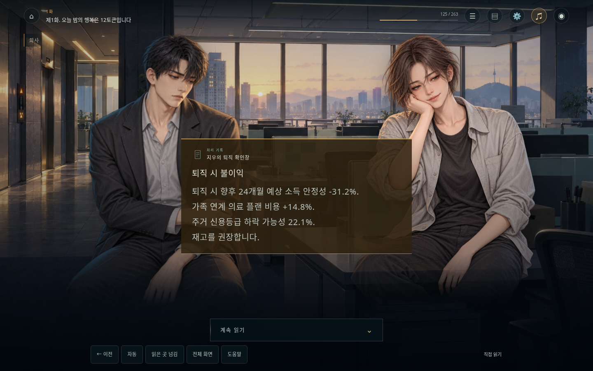
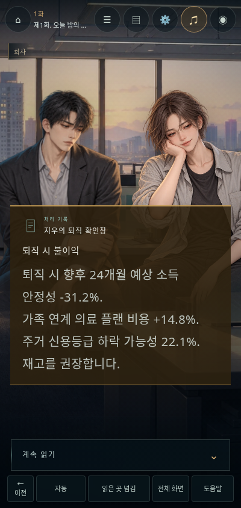
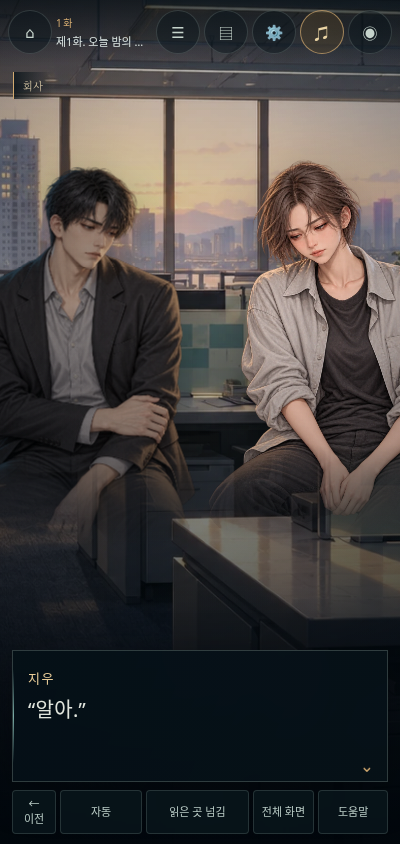
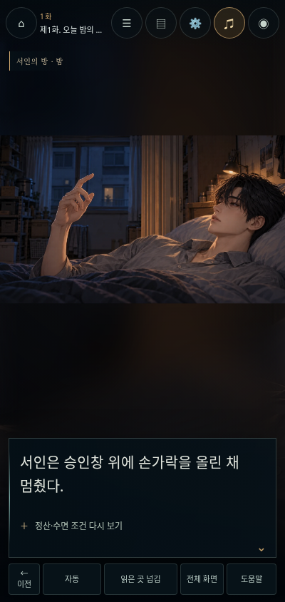
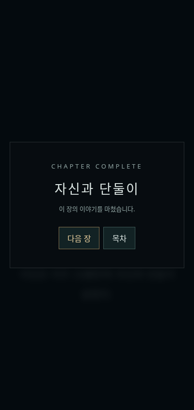

EPISODE 01 · DEMO / 2026.10.19
말이 멈추는 순간까지,
한 장면으로.
서인이 눈을 뜨기 전의 정산부터, 광고를 끄고 자신과 단둘이 남는 순간까지. 1화 전체에 전용 인물 원화와 사건 장면, 자체 작곡 음악, 생활 소리와 침묵을 연결했습니다.
2026.10.19 독서 흐름 보강: 원문 263개 진행 단위는 그대로 두고 161개 읽기 화면으로 연결했습니다. 짧은 왕복 대사는 화자를 표시해 함께 읽으며, 중요한 침묵과 경고·종막은 따로 남깁니다. 집의 아침·밤과 식사 장면은 냉장고 앞에 식탁을 편 좁은 칸막이집으로 맞췄습니다. 결말의 정산·수면 조건은 필요할 때만 펼쳐 봅니다. 수정·검증 기록
지우는 작가 확정 여성 인물입니다. 이전에 남성으로 제작한 지우의 세 표정과 점토 장면을 바로잡았습니다. 인물 원화 정정과 검증 · 2화 제작 인계
대사를 듣는 얼굴
화자의 얼굴만 밝히고 상대의 반응을 남깁니다. 어머니는 콘서트를 즐겁게 이야기하다 이름을 더듬고, 지우는 화면을 보던 시선을 서인에게 돌렸다가 아버지 이야기에 웃음을 거둡니다. 침실·출근·밤의 자세와 복장을 구별했습니다.

선택의 비용이 보이는 사건
퇴직 문서는 제목을 읽는 순간부터 나타납니다. 첫 승인 뒤 노란색, 두 번째 승인 뒤 붉은색 경고가 도착합니다. 경고의 수치는 원문을 그대로 사용하며, 인물의 얼굴을 덮지 않는 위치에 놓았습니다. 어머니가 가계 화면을 끄면 그 뒤의 대사에는 정산 표시가 남지 않습니다.




음악이 없어지는 것도 연출입니다
‘빌린 바다’, ‘작은 식탁’, ‘대답 없는 질문’에 각각 다른 모티프의 자체 작곡곡을 배치했습니다. 팬·그릇·전철·사무실·상자·침구의 소리는 장면의 실제 행동에 맞춰 들어옵니다. 가족 이야기는 선율을 거두고, 마지막 눈감음부터는 모든 음악·효과·공간음과 전환 중 잔향까지 멈춥니다. 종막도 무음으로 유지합니다.
확인한 범위와 남은 한계
| 항목 | 확인 결과 |
|---|---|
| 실제 플레이 | 1화 원문 263개를 담은 161개 읽기 화면을 휴대폰 크기에서 처음부터 끝까지 순서대로 조작했습니다. 조건을 펼치지 않고 진행, 기존 저장 복원, 모달 왕복 후 백로그 중복 방지, 자동 진행, 종막과 2화 전환을 확인했습니다. |
| PC·휴대폰 | 1440 × 900 및 400 × 844 화면에서 원화·문서·본문을 확인했습니다. 휴대폰에서 실제 진행·선택·종막 버튼을 눌렀습니다. 이는 해당 브라우저의 화면 크기 검증이며 모든 실제 기종 인증을 뜻하지 않습니다. |
| 음향 | 15종 음원의 디코딩·클리핑과 게임의 재생 경로를 검사했습니다. 지연 로딩 뒤 종료, 이전 효과음 폐기, 전환 중 음원 즉시 종료, 같은 위치로 조용히 복귀하는 독립 검사 4개가 통과했습니다. 사람의 이어폰·스피커 청취 평가는 아직 별도로 필요합니다. |
| 감상 시간 | 원문은 4,933자, 263개 진행 단위이며 현재 읽기 화면은 161개입니다. 이번 순차 조작은 문장 즉시 표시와 QA 정지를 포함한 기능 검증입니다. 일반 독자의 20~30분 감상 시간을 실측했다고 보고하지 않습니다. 시간을 맞추기 위한 강제 대기는 넣지 않았습니다. |
| 독립 실행판 | 이미지·음원 67종과 모든 모듈을 단일 HTML에 내장하고 구문·자산 검사를 마쳤습니다. 로컬 서버로 연 단일 HTML은 추가 자산 요청 없이 실행됐습니다. file:// 직접 열기는 이번 환경의 관리자 브라우저 정책(ERR_BLOCKED_BY_ADMINISTRATOR)에 차단되어 확인하지 못했습니다. |
| 원문·기록 | 원고·설정·기존 웹과 이야기 데이터는 변경하지 않았습니다. 기존 저장 형식과 읽던 위치를 유지합니다. 이번 변경은 1화의 전용 무대와 공통 진입·음향 연결에 한정합니다. |
이 버전은 상업용 체험판의 연출 밀도를 목표로 제작한 1화 시연판입니다. ‘마스터피스’ 판정이나 유료 출시의 완성도 인증을 붙이지 않습니다. 성우 녹음, 사람 대상 재미·체류 검증, 실기기별 최종 청취 검수는 이번 결과에 포함되지 않습니다.
